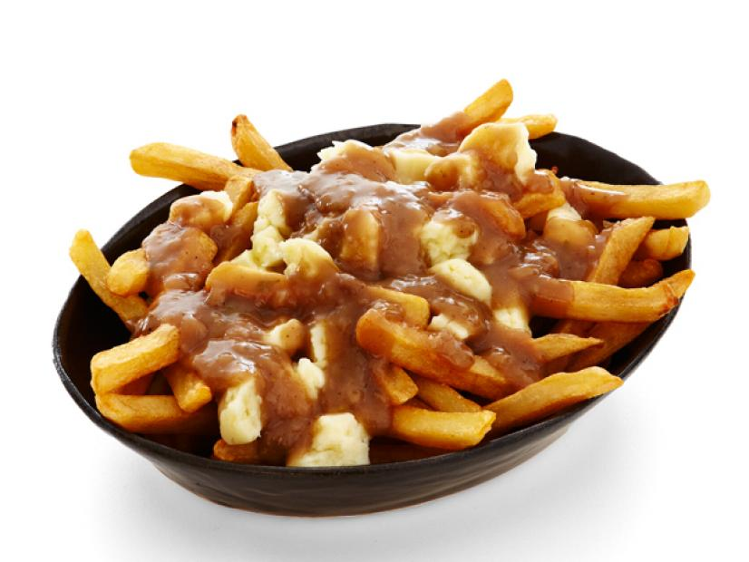

Real Canadian Poutine

Description
A delicious Canadian delight, made to enjoy with
fresh cheese curds and creamy gravy. Make sure to
serve this coming winter with family and friends!
Ingredients
- 1 (14 ounce) package of frozen French fries
- 2 tablespoons butter
- 2 tablespoons all-purpose flour
- 1.5 cups beef broth
- 1.5 cups cheese curds
- salt and pepper
Steps
- Preheat oven to 450 F and grease baking sheet
- spread fries in single layer
- Bake until light brown (15 minutes)
- Melt butter in saucepan over medium-high heat. Whisk in flour
vigorously. When bubbles form, set heat to low. Keep stirring until
it thins. Whisk in beef broth. Bring to a boil then simmer, stirring
occasionally until it thickens (approximately 5 minutes). Add salt
and pepper to taste.
- Distribute cheese curds over fries, pour hot gravy over, enjoy! :3